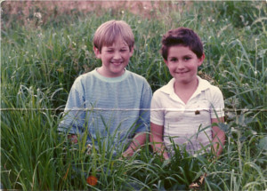
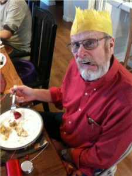

Welcome! I suppose if you’ve clicked this link your either looking to find out more about me or perhaps about this website. You’ll get a little of both on this page but I encourage you to explore the multitude of links located on my home page which encompass the current status of my collective works and inspirations.
So I’m Scot Matson, nobody of interest, yet… depending on who you ask. I am 31 years old and currently employed as Paramedic in Fresno, California. So what business do I have building web sites? Shouldn’t I be performing some selfless act of heroism, perhaps… or perhaps not? After nearly nine years of dedicating my life to helping others I’ve come to multiple realizations about life that one can only understand through years of servitude and repetitive exposure to life, death, and every aspect of the human condition which falls between these extremes. It’s time for a change.
I was born in Oakland, California and adopted out of an foster home when I was two weeks old by a couple on the cusp of entering their 40’s who had already had made a family for themselves with the arrival of their daughter five years earlier. My Mom still jokes to this day that I was the easiest delivery she has ever had. I consider myself fortunate then, and if you ask me now I’d say l still am. Despite growing up in a loving home I’ve always had difficulty recalling many experiences from my childhood, but the memories that I have managed to hold onto have often included my pets, cartoons, and my Father.
Paul, Matt, or Stone to others, Dad to me, was born in the latter half of the 1930’s and it was clear he had an innate talent for design. Whether pen, pencil, paint-and as I came to discover as I was older, woodworking and welding- he was pure genius. Now at the age of 73 he may not be quite as agile on his feet but he still continues to explore different styles of artistic expression, and never ceases to amaze. I on the other hand, while creative in my own way really never found my niche, until recently.
I’ve played my hand multiple times in this life and have a long ways to go yet. Die hard gamer, punk rock drummer, sport bike stunter, ultra marathoner, and according to popular belief, as a Paramedic I am a hero. While all of these roles have forever influenced me and guided me down many roads I still have a few more adventures on my bucket list. One of those goals has been to complete a bachelor’s degree (which is currently under way), while the other is to follow in my Father’s footsteps and pursue a career in design. In the traditional sense I do not foresee my work being presented in a major museum or hung in a local coffee shop, but with the birth of the World Wide Web and growth of web design and development I have finally found a medium in which I can excel.
For those who have already visited the other links on this site you may recall me stating that I had grown up around cutting edge technology and, how do they put it… killer apps? The internet was available to me in the early 90’s and I was in love, although, it would twenty years later that my reentry into the world of academia would aid me in making the connection. Through programmed curves, lines, and colors I finally had found my hack into the world of design and it had been staring me in the face all along. While I took a road less travelled and still have far to go, I wouldn’t have it any other way.